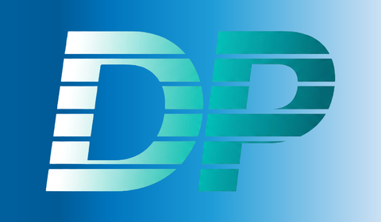
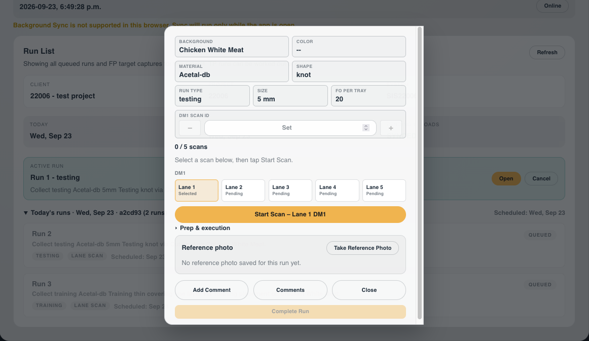

OPAL
Planning, offline field data collection and post-processing for data-collection runs on customer production floors.

Daniel Peleg · UX/UI developer
I work out what the job actually is before I design a screen — which is how a spreadsheet workflow on a factory floor became software that cuts time on site by a quarter.
Chemistry and physics degree, a decade in IT infrastructure, now building production software at P&P Optica.
Waterloo, Ontario · open to 2027 roles
Planning, offline field data collection and post-processing for data-collection runs on customer production floors.
Multi-tenant foreign-object detection and incident management, with a natural-language query dashboard.
Plan and track workouts, and tailor them into a structured plan. Work in progress.
A Chrome extension for switching between client accounts and AWS roles in one click.
An interview that turns a work history into portfolio content. This site was written with it.
Course work and smaller tools.
Case study·OPAL · P&P Optica
Three workflows, one spreadsheet, and a team collecting data in gloves and masks with no reliable internet. How OPAL brought planning, data collection and post-processing into one platform.
